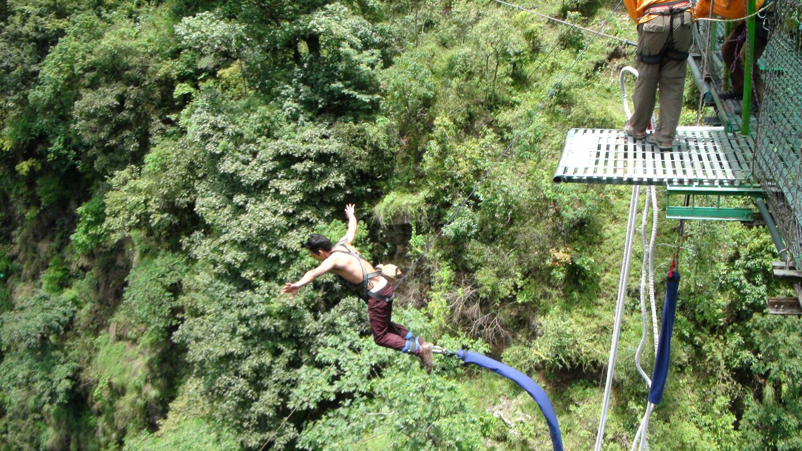

Bungee Jump

(Author:own photo)
Living in mountains country like Nepal, there are many adventural activities. Bungee jumping is one of the adventure Suresh like and he enjoy doing it whenever he goes to visit Nepal.
The jump takes place from a 166 m wide steel suspension bridge that joins two sides of a deep valley over the raging Bhote Koshi River (Nepal). The place has spectacular scenery with
dense forests covering the top of the cliff. One can overnight here and go rafting canyoning and rock climbing as well. He had gone for a bungee jump at Hemja, Pokhara. This is Nepal's
only tower bungee, high ground bungee and swing, offering various options of bungee jumping. He is the person who lover nature and always excited for adventures.
Playing Soccer
(Author: Photograph from Getty)
Living in country like Nepal, soccer is the king of sport. That’s why it is not surprising that his childhood has grown up with the soccer’s ball until today. He was kicking ball when
I was only about 2-3 years old. Since then, playing soccer is his favorite’s sport and it is his hobby whenever I have free time. It is interesting and amazing, especially the feeling
when he score. That feeling fulfills in him like he has just archived something very important. Playing soccer also helps to relax and be confident when he has stress and frustration.
For instant, after doing assignment or studying all day long, he feel tired and exhausted. However, having fun with the ball such as kicking it against the wall or trying to do some tricks,
all of my tiresome and exhaustion die out.
Reading Books
(Author: PrepScholar GMAT)
Living in country like Nepal, soccer is the king of sport. That’s why it is not surprising that his childhood has grown up with the soccer’s ball until today. He was kicking ball when
I was only about 2-3 years old. Since then, playing soccer is his favorite’s sport and it is his hobby whenever I have free time. It is interesting and amazing, especially the feeling
when he score. That feeling fulfills in him like he has just archived something very important. Playing soccer also helps to relax and be confident when he has stress and frustration.
For instant, after doing assignment or studying all day long, he feel tired and exhausted. However, having fun with the ball such as kicking it against the wall or trying to do some tricks,
all of my tiresome and exhaustion die out.